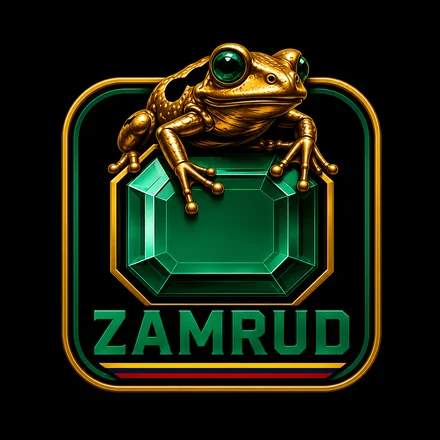
ZAMRUD · BOGOTÁCortometraje de 60 segundos. Te compartimos la animación de referencia, un guion base y la idea para que la hagas tuya.
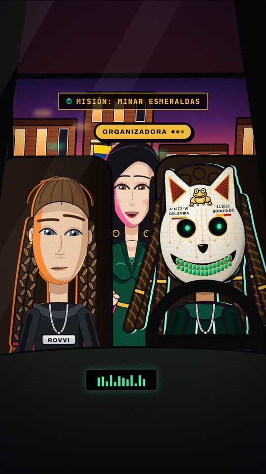
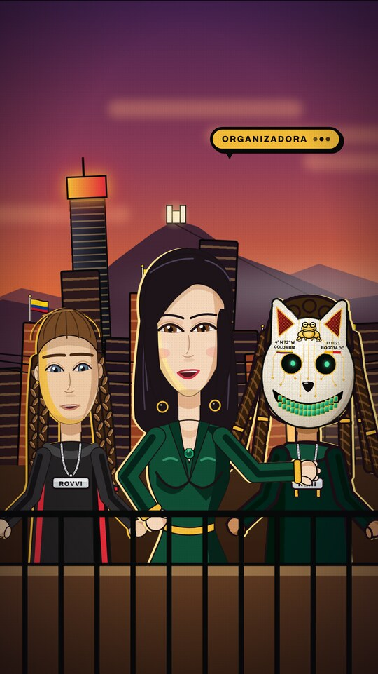
En Bogotá hay esmeraldas por minar, y esas esmeraldas son los artistas. Andes, la Organizadora, arma un equipo con Rovvi y Keni, les da una misión y sale a buscarlas. El corto termina invitando a los artistas a dejar su información.
Zamrud es nuestro proyecto de reunir artistas en Bogotá, a la que aquí llamamos Bogotham. Este corto es su convocatoria.
La animación y los diálogos de esta propuesta son un guion base: una idea inicial para que entiendas lo que queremos expresar sin tener que explicarlo en abstracto.
Sabemos que en tu servicio va incluido el guion. Queremos que lo complementes, lo cuestiones y lo mejores. Tu criterio como director cuenta tanto como la idea original.
Lo que queremos mantener: la metáfora de las esmeraldas, los tres personajes, la máscara de gato con la rana dorada, el momento tipo videojuego en el automóvil y la llamada a la acción final.
Cada escena trae su imagen de referencia, el tiempo, lo que pasa en pantalla y los diálogos. Los diálogos son la estructura base: pueden tener pequeños cambios, pero esa es la idea original. Es una animación de referencia, dibujada en vertical solo como guía: el corto es horizontal y el look final lo defines tú con tu equipo.
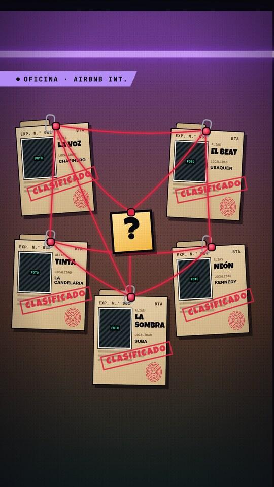
Oficina, Airbnb interior. Pared de corcho con neón morado: 5 expedientes clasificados y una red de hilo rojo. Entra el título.
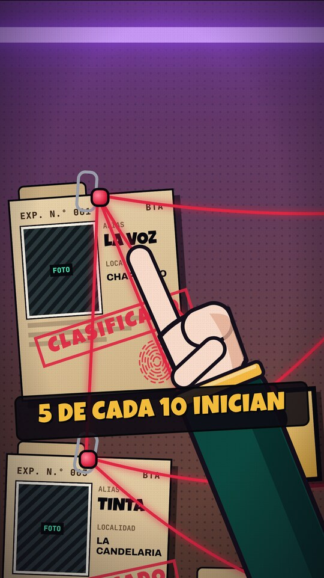
Primer plano de la mano siguiendo el hilo hasta el signo de interrogación. Latido. Texto: “5 de cada 10 inician”.
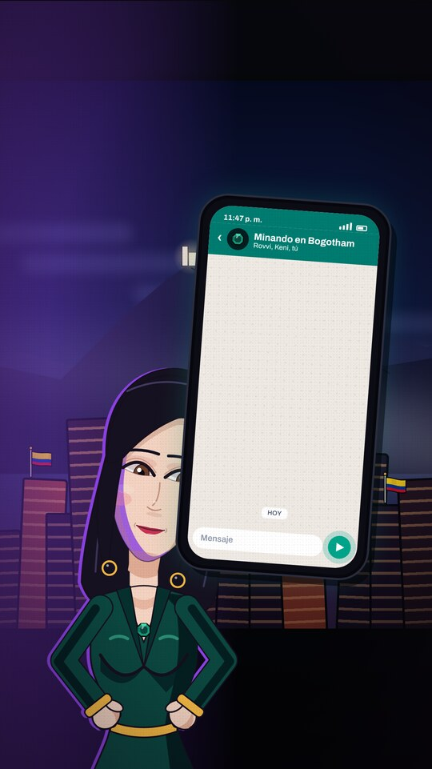
Andes habla y escribe al grupo de WhatsApp “Minando en Bogotham”. Rovvi confirma y Keni responde con un pulgar arriba.
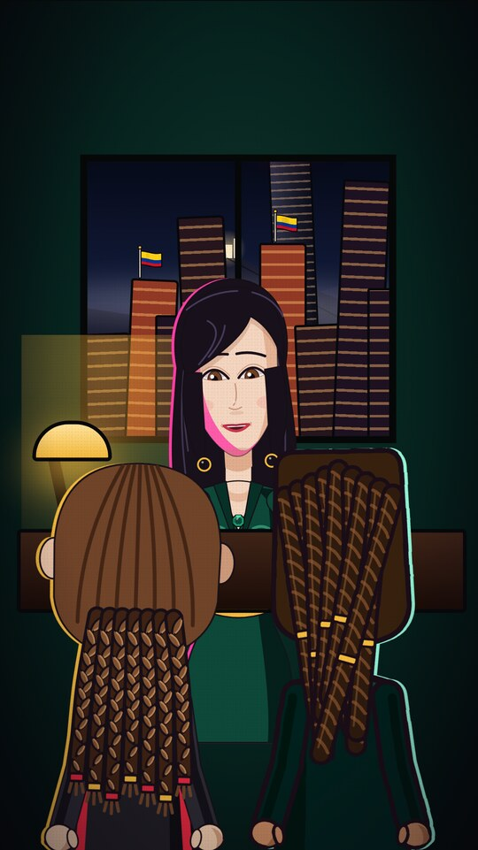
Rovvi y Keni caminan de espaldas hacia el escritorio, con la Torre Colpatria en la ventana. Texto: “La cita”.
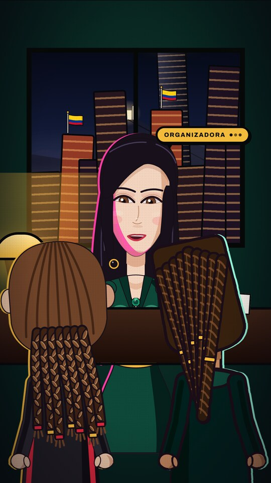
Andes explica la misión a Rovvi y Keni, que están de espaldas en primer plano.
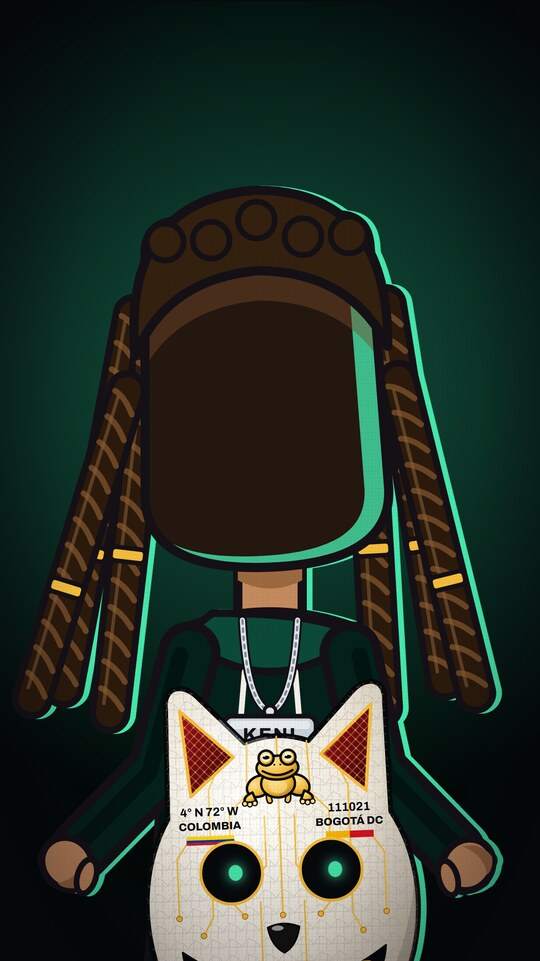
Entrega de la máscara de gato. Keni se la pone y se hace zoom a la rana dorada de la frente.
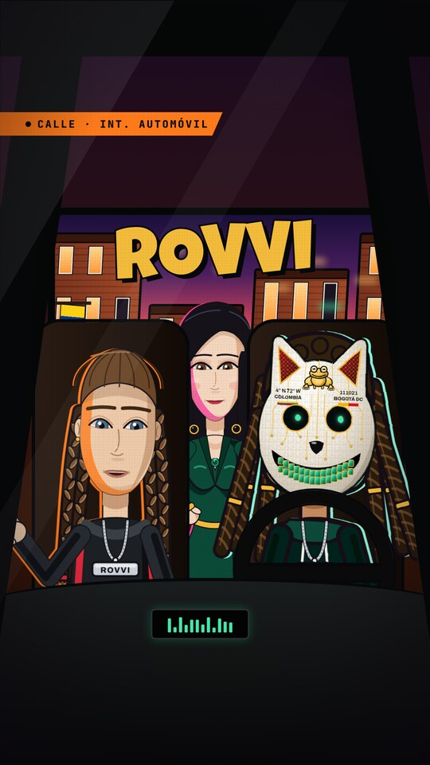
Zoom out desde la rana al interior del automóvil. Título: ROVVI.
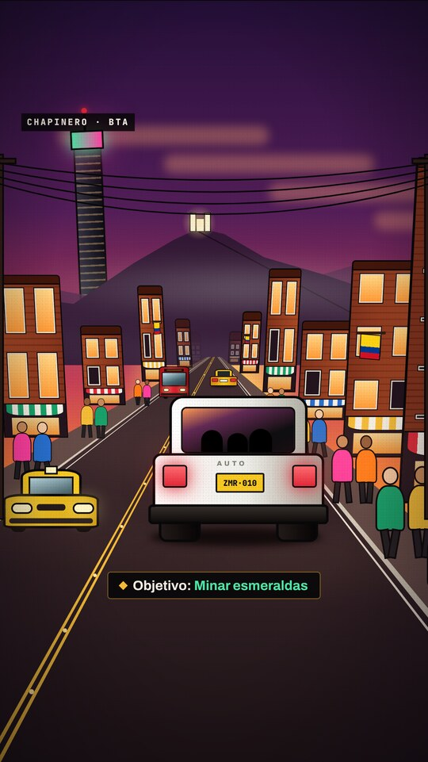
El automóvil blanco por Chapinero al atardecer, con cerros con neblina y Monserrate. Interfaz tipo videojuego: barras, minimapa, estrellas de búsqueda vacías y objetivo “Minar esmeraldas”.
Diálogo dentro del automóvil. Keni saluda con la mano.
Terraza en hora dorada, con bandera de Colombia. Discurso final y plano de espaldas: las esmeraldas brillan en la ciudad.
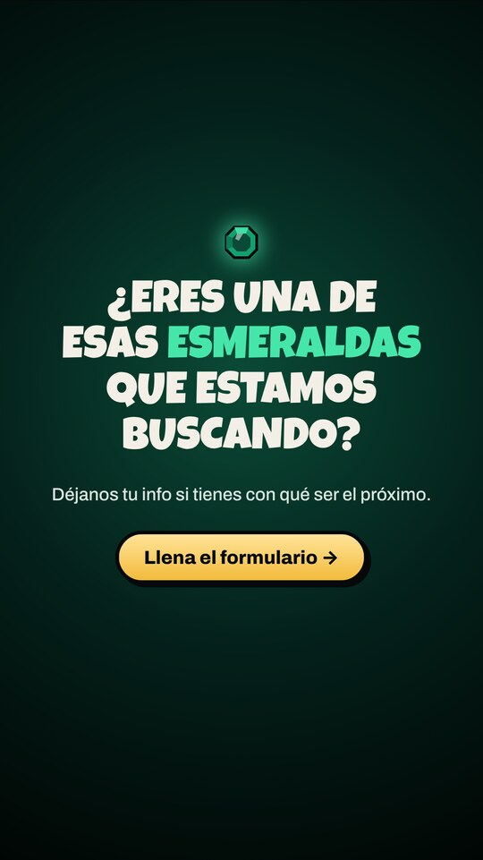
Texto: “¿Eres una de esas esmeraldas que estamos buscando?” y “Déjanos tu info si tienes con qué ser el próximo”. Botón al formulario (enlace por definir). Cierre con el logo de Zamrud.